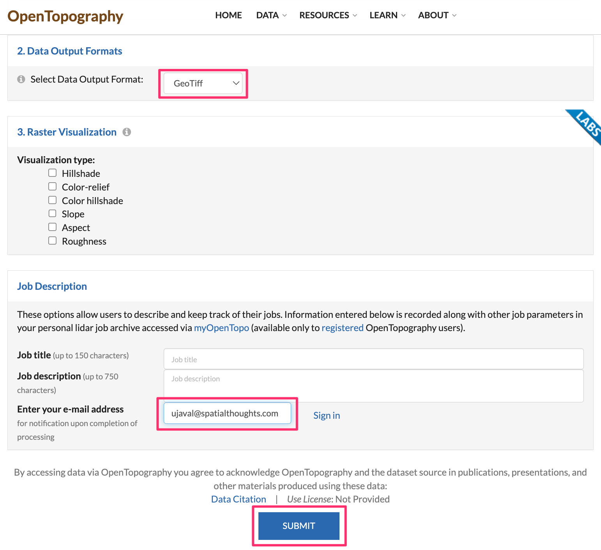
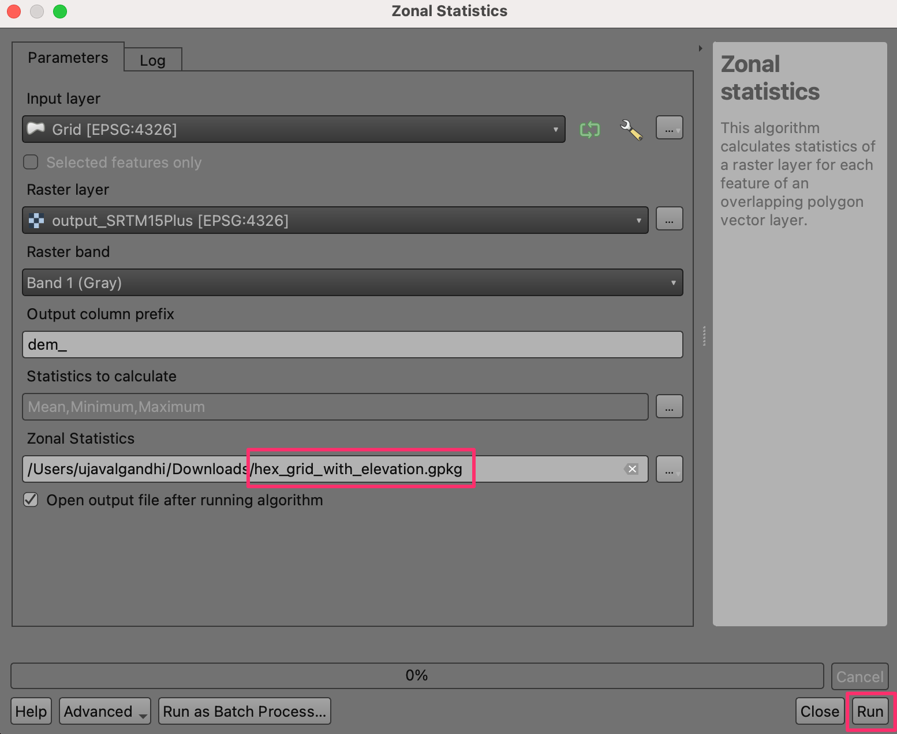

Ujaval Gandhi
Ujaval GandhiCreación de un Mapa Mundial de Bloques (QGIS3)¶
Contribución de: Steven Kim
En el tutorial anterior Filtrado básico y estilización con expresiones (QGIS3) vimos cómo se pueden utilizar expresiones simples para filtrar y estilizar datos en QGIS. Ampliaremos este tema creando un mundo de bloques a partir de una cuadrícula hexagonal con valores de elevación.
Visión general de la tarea¶
Tomaremos una rejilla hexadecimal que contiene valores de elevación y utilizaremos una función matemática para establecer una variable de altura para el renderizador 2.5d y una sentencia condicional para aplicar una rampa de color.

Otras competencias que aprenderá¶
Descubrir y descargar conjuntos de datos de elevación.
Creación de una cuadrícula hexagonal y extracción de estadísticas raster para cada celda de la cuadrícula.
Añadir una nueva rampa de color a QGIS.
Obtener los datos¶
OpenTopography proporciona acceso a muchos conjuntos de datos de elevación con licencia abierta. Extraeremos y descargaremos un DEM para su región de interés a partir de un DEM global y un conjunto de datos de batimetría oceánica alojados en OpenTopography.
Visite la página de datos Global Bathymetry and Topography at 15 Arc Sec: SRTM15+ V2.5.5 en el sitio web OpenTopography. Se trata de un conjunto de datos globales de 500 m de resolución derivados del MDE SRTM y de varios conjuntos de datos batimétricos oceánicos.

Desplácese hasta la sección 1. Seleccione el área de datos a procesar Haga clic en el botón :guilabel:`SELECCIONE UNA REGIÓN y dibuje un rectángulo que cubra su región de interés.

Una vez definida la región, desplácese hasta la sección 2. Formatos de salida de datos y seleccione
GeoTiff. Formatos de salida de datos` y seleccioneGeoTiff. Deje el resto de opciones por defecto y desplácese hasta la sección Descripción del trabajo. Introduzca su dirección de correo electrónico para recibir una notificación cuando la descarga esté lista. Haga clic en el botón ENVIAR.

La descarga puede tardar unos minutos en procesarse. Una vez lista, recibirá un enlace para descargar el subconjunto seleccionado. Descargue el archivo en su ordenador. El archivo descargado es un archivo comprimido tar que necesita ser descomprimido para ser abierto en QGIS. En Windows, puede utilizar un programa externo como 7-Zip para descomprimir y extraer el archivo
output_SRTM15Plus.tif.
En QGIS, localice el archivo
output_SRTM15Plus.tifen la etiqueta Navegador. Arrástrelo y suéltelo en el lienzo de QGIS. Se añadirá una nueva capaoutput_SRTM15Plusal panel Capas.

Abra la Caja de Herramientas de Procesado desde . Busque y localice el algoritmo . Haga doble clic para abrirlo.

En el cuadro de diálogo Crear rejilla, elija
Hexágonocomo Tipo de rejilla. Crearemos una cuadrícula que abarque todo el MDE. Para la Amplitud de la malla, haga clic en la flecha hacia abajo y seleccione .

Nuestra región seleccionada es bastante grande, por lo que podemos crear una cuadrícula de 1 grado. Seleccione
1tanto para Espaciado horizontal como para Espaciado vertical. Si está trabajando en una región más pequeña, puede elegir un espaciado de cuadrícula menor. Deje las demás opciones en sus valores por defecto y pulse el botón Ejecutar para crear la rejilla.

Se añadirá una nueva capa
Gridal panel Capas`. Ahora extraeremos los valores mínimo, máximo y medio de elevación en cada polígono de la cuadrícula. Seleccione la capaGridy localice el algoritmo de la caja de herramientas de procesado. Haga doble clic para abrirlo.

Seleccione
Gridcomo Capa de entrada youtput_SRTM15Pluscomo Capa ráster. Introducedem_como Prefijo de columna de salida. A continuación configuraremos las estadísticas que queremos extraer del raster. Haga clic en el botón … situado junto a Estadísticas a calcular.

Marque las opciones de valores
Media,MáximoyMínimoy haga clic en Aceptar`. Guardaremos los resultados en un archivo. Haga clic en el botón … situado junto a Estadísticas zonales y seleccione Guardar en archivo….

Busque una carpeta en su ordenador e introduzca el nombre del archivo como
hex_grid_with_elevation. Asegúrese de que el tipo de archivo está seleccionado como Archivos GeoPackage (*.gpkg). Haga clic en Guardar. Una vez configurado el cuadro de diálogo Estadísticas zonales, haga clic en Ejecutar.

El proceso puede tardar unos minutos dependiendo del tamaño de su cuadrícula. Una vez completados los cálculos, se añadirá una nueva capa
hex_grid_with_elevational panel Capas`. Se trata de una capa vectorial con los atributosdem_mean,dem_minydem_maxque contiene las estadísticas de elevación extraídas del MDE.

Para mayor comodidad, puede descargar directamente una copia de la parrilla preparada desde abajo:
Fuente de datos [OPENTOPOGRAPHY]
Procedimiento¶
Localice el archivo
hex_grid_with_elevation.gpkgen el navegador QGIS y expándalo. Seleccione la capahex_grid_with_elevationy arrástrela al lienzo.

Una nueva capa
hex_grid_with_elevationse cargará ahora en QGIS y debería ver una cuadrícula hexagonal.

Antes de continuar, debemos añadir una rampa de color adecuada para colorear los MDE. Haga clic en Configuración en la barra de menús y seleccione Administrador de estilos.

Haga clic en el signo Añadir elemento de la parte inferior y seleccione .

Desplácese por las rampas de colores hasta encontrar wiki-1.02. Puede que haya varias con el mismo nombre, simplemente haga clic en una y pulse Aceptar.

En la ventana Guardar nueva rampa de color, introduzca el valor
wiki-1.02como Nombre.

Haga clic en Guardar para salir de la ventana y, a continuación, haga clic en Cerrar para salir del Gestor de estilos. Ahora la rampa de color wiki-1.02 está disponible para usarla en sus proyectos en adelante.

Click on Open Layer Styling Panel and switch from Single Symbol to 2.5 D. Click the ε button next to Height.

En la Constructor de expresiones, introduzca la siguiente expresión. Esta expresión utiliza la función
scale_exp()para cambiar el rango de los valores del atributodem_meande 0-10000 a 0-4 y utilizar un exponente de 2. El escalado exponencial queda bonito en el mundo de bloques. El+8000es para hacer que el fondo del océano sea igual a cero.
scale_exp(("dem_mean"+8000),0,10000,0,4,2)
Cambia la Ángulo a
135.

Aplicaremos nuestros propios colores a las rejillas. Desactive Sombrear paredes en función del aspecto y Sombra.

Debería ver que la topografía de la región empieza a tomar forma. Haga clic en Abrir panel de estilos de capa y cambie de 2.5D a Simbolo único.

En la ventana Símbolo, observe que hay dos Generadores de Geometría, cada uno con un tipo de capa Relleno Simple. La primera Relleno Simple es la cara superior de cada bloque, mientras que la segunda Relleno Simple es la cara lateral.

Haga clic en la primera Relleno simple para cambiar el color de la cara superior. Haga clic en el botón Datos definen sobreescritura para el Color de relleno y seleccione Editar… en el menú.

Aparecerá el cuadro de diálogo Constructor de expresiones para Color de relleno. Introduzca la siguiente expresión. Esta expresión tiene una declaración condicional
CASEpara usar colores wiki-1.02 cuando el valor del atributodem_meanes mayor o igual a cero y colores verde-azul cuandodem_meanes menor que cero.
CASE WHEN "dem_mean" >= 0 THEN ramp_color('wiki-1.02',scale_linear("dem_min",0,1500,0.4,1)) ELSE ramp_color('GnBu',scale_linear("dem_mean",-6000,0,1,0)) END
La rejilla hexadecimal se muestra ahora en los colores determinados por nuestra expresión. Haga clic en el botón Datos definen sobreescritura para Color de relleno y seleccione Copiar en el menú.

Haga clic en el botón Datos definen sobreescritura para el Color de trazo y seleccione Pegar en el menú.

Deberías ver que los colores surten efecto y nuestro mapa está terminado. Siéntete libre de experimentar con las expresiones de este tutorial, como cambiar parámetros en la función de altura o añadir y probar nuevas rampas de color.

If you want to give feedback or share your experience with this tutorial, please comment below. (requires GitHub account)